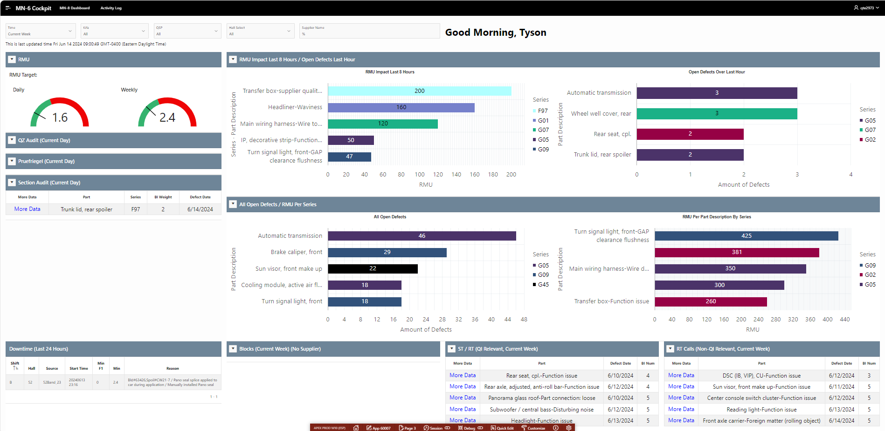
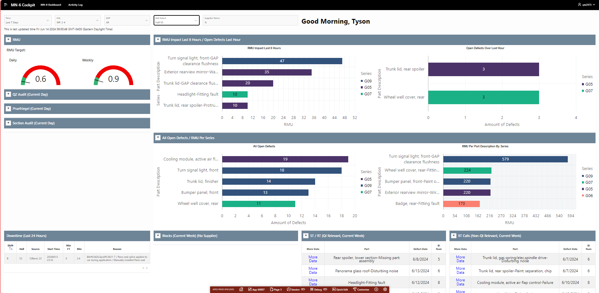
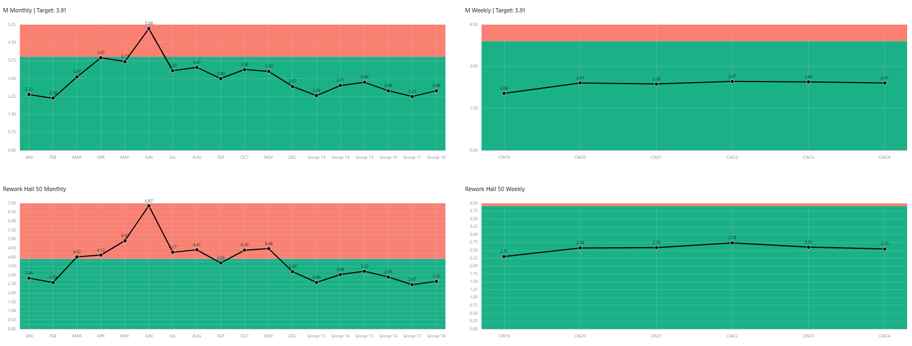
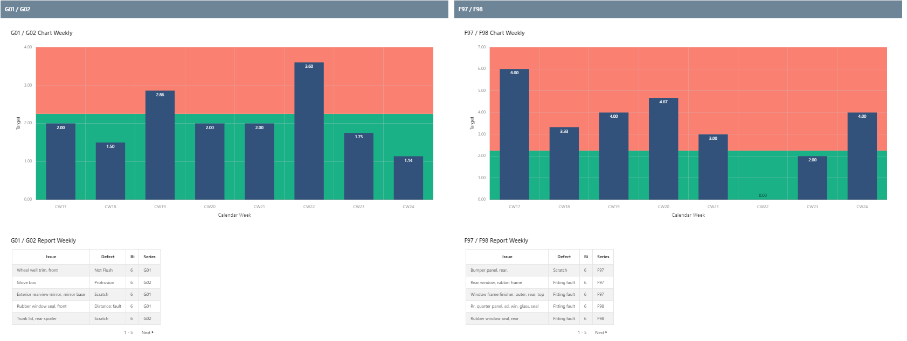
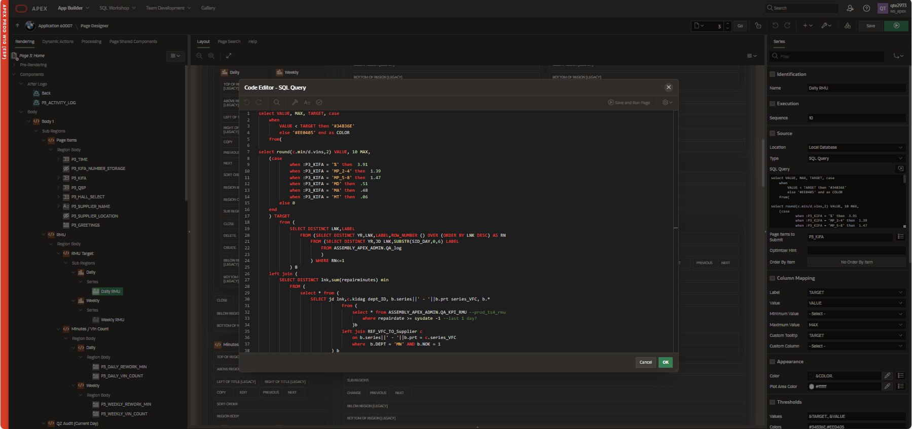
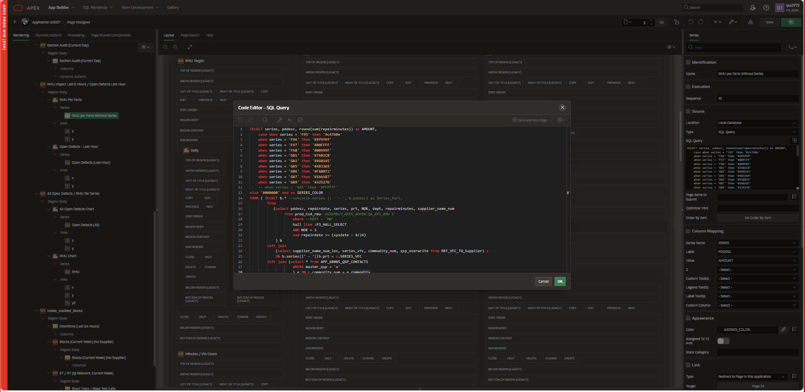

Project Overview
This project is a streamlined data analytics homepage for the department of MN at BMW Group in South Carolina.
Images





Code Snippets
Daily RMU (Repair Minutes per Unit)
select VALUE, MAX, TARGET, case
when
VALUE < TARGET then '#34B36E'
else '#EE0405' end as COLOR
from(
select round(c.min/d.vins,2) VALUE, 10 MAX,
(case
when :P3_KIFA = '%' then 3.91
when :P3_KIFA = 'MP_2-4' then 1.39
when :P3_KIFA = 'MP_5-8' then 1.47
when :P3_KIFA = 'MD' then .51
when :P3_KIFA = 'MA' then .48
when :P3_KIFA = 'MT' then .06
else 0
end
) TARGET
from (
SELECT DISTINCT LNK,LABEL
FROM (SELECT DISTINCT YR,LNK,LABEL,ROW_NUMBER () OVER (ORDER BY LNK DESC) AS RN
FROM (SELECT DISTINCT YR,JD LNK,SUBSTR(SID_DAY,0,6) LABEL
FROM ASSEMBLY_APEX_ADMIN.QA_log
)
) WHERE RN<=1
) B
left join (
SELECT DISTINCT lnk,sum(repairminutes) min
FROM (
select * from (
SELECT jd lnk,c.kidag dept_ID, b.series||' - '||b.prt series_VFC, b.*
From (
select * from ASSEMBLY_APEX_ADMIN.QA_KPI_RMU --prod_ts4_rmu
where repairdate >= sysdate -1 --last 1 day?
)b
left join REF_VFC_TO_Supplier c
on b.series||' - '||b.prt = c.series_VFC
where b.DEPT = 'MN' AND b.NOK = 1
) b
where (dept_ID like :P3_KIFA or dept_ID is null)
and b.hall LIKE :P3_HALL_SELECT
)
group by lnk
) C
ON C.lnk =B.lnk
left join
(select lnk, sum(vc) VINS from
(SELECT DISTINCT LNK,KPI,KPIM,KPIC,AREA,SERIES,VC,DCM,VAL
FROM ASSEMBLY_APEX_ADMIN.QA_KPI_FRZ_FREQ --make new view?
WHERE KPI='RMU'
AND NOK=1
AND FREQ='D'
AND AREA='MN'
AND LVL=3
)
group by lnk
) d ON d.LNK=B.LNK);

SELECT series, pddesc, round(sum(repairminutes)) as AMOUNT,
case when series = 'F95' then '#c47b0e'
when series = 'F96' then '#9f9f9f'
when series = 'F97' then '#B0FFFF'
when series = 'F98' then '#00999F'
when series = 'G01' then '#7681CB'
when series = 'G02' then '#960145'
when series = 'G05' then '#4B3369'
when series = 'G06' then '#FA8072'
when series = 'G07' then '#1bb187'
when series = 'G09' then '#32527b'
else '#000000' end as SERIES_COLOR
FROM ( SELECT b.* --concat(b.series || ' - ', b.pddesc) as Series_Part,
from
(select pddesc, repairdate, series, prt, NOK, dept, repairminutes, supplier_name_num
from prod_ts4_rmu--ASSEMBLY_APEX_ADMIN.QA_KPI_RMU b
where --DEPT = 'MN'
hall like :P3_HALL_SELECT
AND NOK = 1
and repairdate >= (sysdate - 8/24)
) b
left join
(select supplier_name_num_loc, series_vfc, commodity_num, qsp_overwrite from REF_VFC_TO_Supplier) c
ON b.series||' - '||b.prt = c.SERIES_VFC
left join (select * from APP_60005_QSP_CONTACTS
WHERE master_qsp = 'x'
) e ON c.commodity_num = e.commodity
where nvl(nvl(qsp_overwrite,QSP_NAME),'x') like :P3_QSP
and nvl(KIFA,'x') like :P3_KIFA
-- and c.supplier_name_num_loc like :P3_SUPPLIER_NAME
and trim(substr(supplier_name_num_loc, 1, instr(supplier_name_num_loc, '_') - 1)) like '%' || upper(:P3_SUPPLIER_NAME) || '%'
) GROUP BY pddesc, series
ORDER BY round(sum(repairminutes)) DESC fetch first 5 rows only;